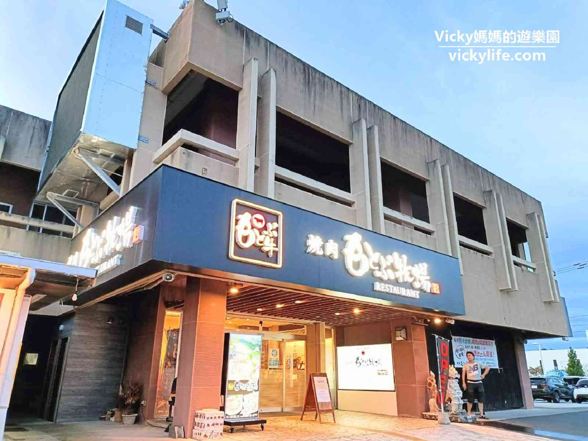
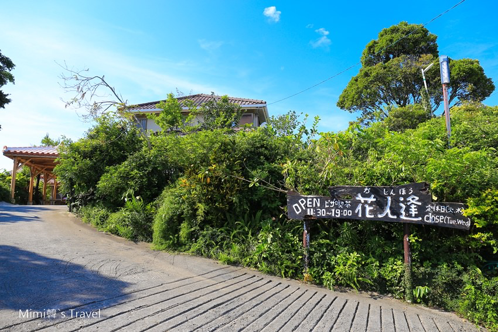
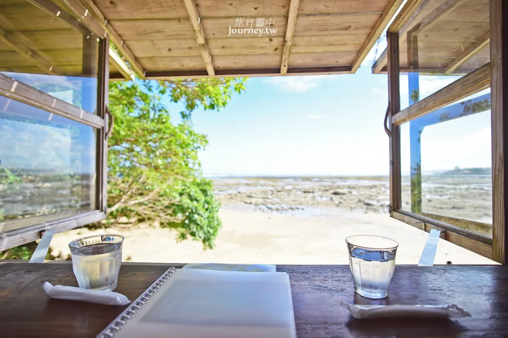
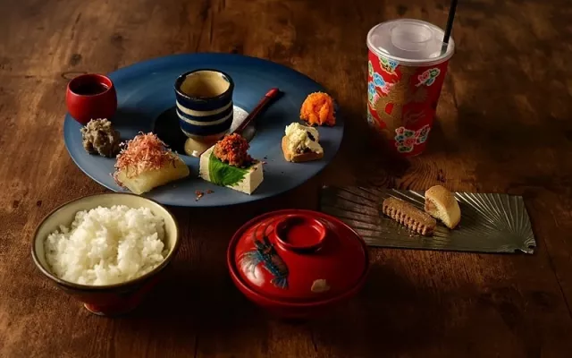
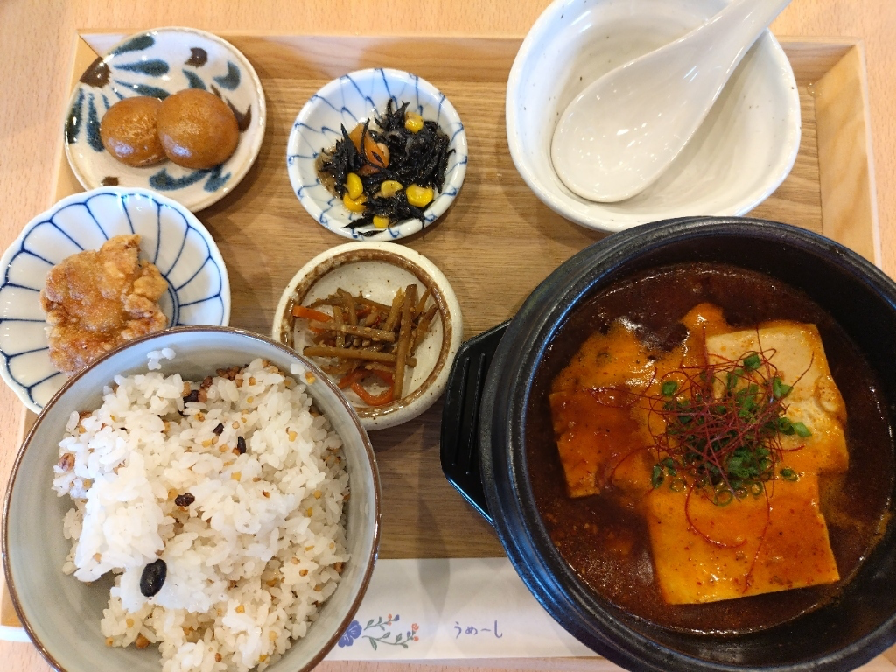
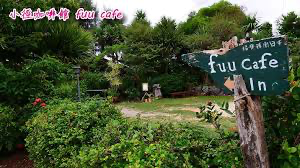
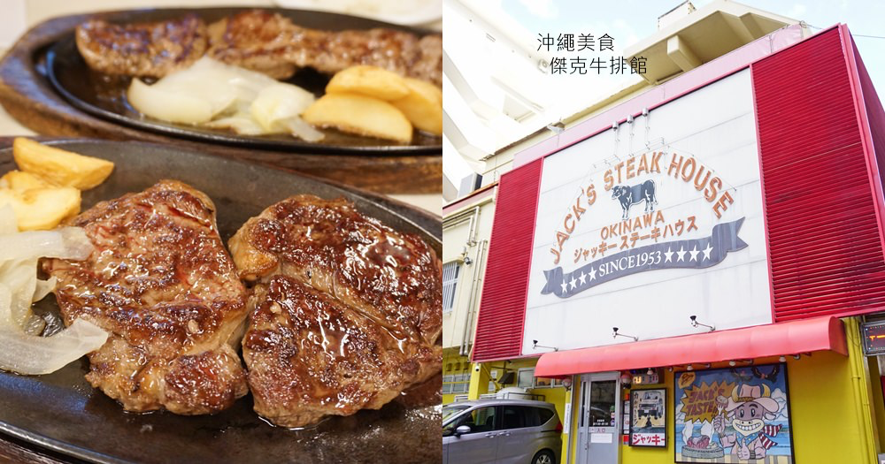

沖繩必吃推薦

燒肉 琉球之牛
藏身於國際通的高級燒肉名店，嚴選沖繩縣產和牛，特製晚餐套餐油花均勻，在炭火上滋滋作響。適合情侶約會或慶祝特殊紀念日。
看完整介紹 →
燒肉本部牧場
距離美ら海水族館僅五分鐘車程，自家牧場培育的品牌牛「もとぶ牛」，以發酵飼料餵養，中午時段 CP 值最高，全年無公休。
看完整介紹 →
花人逢
本部町山間景觀咖啡廳，由古民家改裝，窗外是令人屏息的翡翠綠海岸線，義式窯烤手工披薩用料實在，是 IG 打卡熱點。
看完整介紹 →
浜辺の茶屋
南城市玉城海岸懸崖上的元祖海景咖啡廳，數十年穩坐熱搜榜，太平洋浩渺盡收眼底，窗外座位可聽潮與海風。
看完整介紹 →
風林火山
清晨七點開門的日式早餐專門店，使用阿古豬、嚴選日本米與秘製柴魚昆布高湯，昭和風情的低調沉穩氛圍。
看完整介紹 →
Banta Cafe
讀谷村懸崖上的日本最大規模海景咖啡廳之一，四個特色主題區，無時間限制用餐，夕陽時分金橙色光線將大海染成琥珀色。
看完整介紹 →
INN CAFE｜古宇利島
黑色集裝箱裡，藏著一座碧藍海。古宇利大橋無敵海景相伴，黑毛和牛咖哩飯肉香濃郁，CP值在觀光區中相當難得。
看完整介紹 →
えびす豆腐料理店｜名護
一塊豆腐，承載十八年的名水與手感。使用名護市指定文化遺產「轟之瀧」瀑布水，地釜手工製作豆腐，豆香飽滿而自然。
看完整介紹 →
fuu cafe｜本部町・瀨底島
瀨底秘境木屋，連咖啡都是都是一場冒險。完全預約制，專業咖啡師淺焙咖啡香氣飽滿，海葡萄與阿古豬職人食材。
看完整介紹 →
ジャッキーステーキハウス｜那霸
七十年老店，沖繩牛排文化的原點。1953年美軍基地時代起家，紐約客大份量250g不到三千日幣，吃過就懂CP值驚人。
看完整介紹 →隱藏版美食
在地人推薦的私房美食，遠離觀光客區！

Ringer Hut｜本部町
沖繩唯一椰子蟹專門店，珍稀食材職人在地獻技。椰子蟹是沖繩的代表美食之一，肉質鮮甜彈牙，搭配在地食材演繹的創意料理，讓人回味無窮。適合想要品嚐沖繩獨特海味的內行人。
看完整介紹 →
SOMISO Cafe｜讀谷村
隱身讀谷村巷弄中的海景咖啡廳，沒有過多行銷卻在當地人間流傳。面海的座位可以靜靜看潮汐發呆一個下午，自家製甜點與咖啡品質不俗，是需要安靜時光的旅人首選。
看完整介紹 →
Pork Tamago｜沖繩本島
沖繩在地漢堡 IG 打卡名店，使用在地食材豬肉與特調醬汁，份量紮實口感多汁。店內風格可愛繽紛，是許多網美必訪的口袋名單，建議平日前往避免排隊。
看完整介紹 →
Seaside Cafe｜恩納村
恩納村懸崖上的無敵海景餐廳，座位緊鄰海岸線，天氣好時眼前展開的是漸層藍的太平洋。餐點以發酵食材與在地蔬菜為主，吃得美味也能吃得健康。
看完整介紹 →
Matsunoo｜那霸市
傳統琉球家庭料理，使用阿古豬與在地食材，炊飯與苦瓜料理是招牌。家庭式的氛圍溫暖舒適，讓人品嚐到最在地的沖繩家常味，適合想要深度體驗琉球文化的旅人。
看完整介紹 →
Café 識名園｜南城市
UNESCO 世界文化遺產「識名園」內的附設咖啡廳，在西班牙式庭園中品嚐抹茶與沖繩甜點，靜靜感受琉球王國的悠閒時光。門票即可入園，適合安排在行程中當作中途休息點。
看完整介紹 →